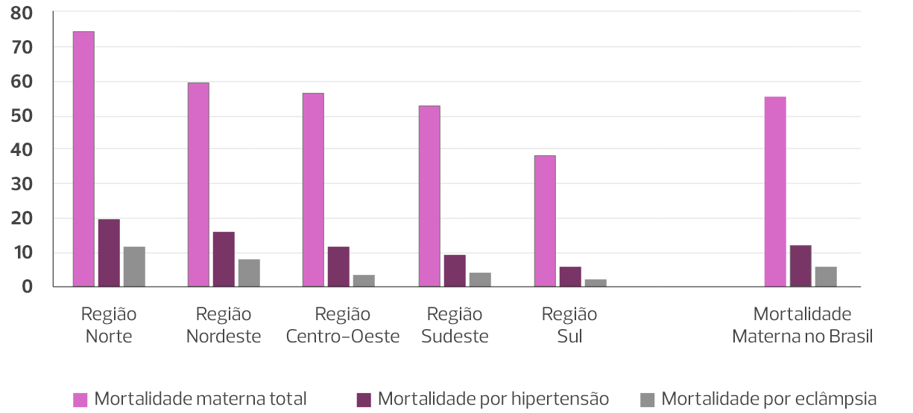

Aula 3
Eclâmpsia e síndrome HELLP
Introdução às Síndromes Hipertensivas na gravidez
Historicamente, as síndromes hipertensivas estão entre as principais causas de morte materna no mundo. Eclâmpsia e síndrome HELLP são complicações da pré-eclâmpsia com impacto evidente na letalidade devido a essa doença. Como podemos observar na epígrafe registrada em uma igreja de Norfolk, no Reino Unido, mencionada por Sapwell (1979): “Encontra-se aqui Margaret Robinson... do condado de York, e esposa de Robert Legon Esquire, com quem foi juntada no mais casto elo de amor... sua sexta criança morreu quando inclusa ainda em seu útero. Após ser abalada pela força de convulsões frequentes, sua alma foi para o paraíso no quarto dia de dezembro de 1638.”. A documentação da morte materna e fetal por complicações da pré-eclâmpsia se faz presente ao longo dos anos, demonstrando a persistente necessidade de intervir nessa causa de morte materna e perinatal.
As principais complicações agudas associadas à eclâmpsia são:
- Morte e morbidade materna grave (near miss materno).
- Acidente vascular encefálico (AVE).
- Edema agudo de pulmão (EAP).
- Insuficiência cardíaca.
- Cardiomiopatia.
- Insuficiência renal aguda (IRA).
- Pneumonia de aspiração.
- Tromboembolismo venoso.
- Descolamento prematuro da placenta (DPP).
- Hemorragia pós-parto (HPP).
-
Coagulação intravascular disseminada (CIVD), entre outras.
Estima-se que a cada ano ocorrem cerca de 50 mil mortes maternas no mundo decorrentes da eclâmpsia.
A morte por eclâmpsia pode acontecer subitamente em decorrência de hemorragia cerebral volumosa ou por outras complicações associadas. Eventualmente, o coma precede as convulsões, mascarando-as e potencialmente atrasando o diagnóstico da eclâmpsia. O termo eclâmpsia sine eclâmpsia tem sido utilizado para identificar essa condição específica da eclâmpsia.
A morte materna decorrente de síndromes hipertensivas é mais comum em países em desenvolvimento e muito influenciada por ocorrência associada da eclâmpsia.
Dentro dessa lógica, as síndromes hipertensivas permanecem como a principal causa de morte materna no Brasil, tendo a eclâmpsia como a principal complicação e agravo. O Norte do Brasil é a região com maior impacto da hipertensão na mortalidade materna, mas as demais regiões também mantêm taxas elevadas. Portanto, podemos afirmar que continuamos necessitando de intervenções efetivas, que sejam capazes de reduzir a incidência de casos graves, da eclâmpsia e da síndrome HELLP.
Mortalidade brasileira por 100.000 nascidos vivos em 2019
> Impacto materno e perinatal da hipertensão
A morte materna por hipertensão e suas complicações associadas é potencialmente contida por ações que podem ser implementadas desde o início da gestação. A despeito disso, vários estudos nacionais vêm registrando a contribuição da eclâmpsia e da síndrome HELLP na mortalidade materna brasileira ao longo dos anos.
As complicações associadas à eclâmpsia estão diretamente relacionadas ao EAP, à evolução com HPP, a condições de CIVD, dano renal, como também a dano placentário (DPP).
> Assistência e cuidados
O atendimento a mulheres portadoras de síndromes hipertensivas durante a gestação deve acontecer em dois níveis:
Ambulatorial
Assistência
pré-natal.
Hospitalar
Internações,
parto, puerpério.
Após a alta hospitalar, os cuidados no puerpério devem ter continuidade no nível ambulatorial.
A assistência a gestantes com hipertensão exige a compreensão de que sua expressão é sistêmica, heterogênea e progressiva. As tomadas de decisões são predominantemente baseadas no tirocínio clínico. É necessário o entendimento de que a assistência qualificada das gestantes hipertensas oferece a oportunidade de proteger a vida delas e de seus infantes, porém quase sempre exigindo intervenções oportunas devido ao caráter dinâmico dessa condição clínica.
A qualificação profissional para o atendimento a gestantes hipertensas é imprescindível. A maioria das mortes por pré-eclâmpsia podem ser evitadas, mas para isso é necessário que as equipes assistenciais façam diagnósticos oportunos e corretos, e elaborem planos adequados de cuidados, contendo sequenciamentos detalhados das etapas de atendimento.
> Definição
A eclâmpsia é definida pela manifestação de uma ou mais crises convulsivas tônico-clônicas e generalizadas, ou também pelo coma, manifestos em gestantes com hipertensão gestacional ou pré-eclâmpsia, na ausência de doenças neurológicas. Sua incidência é variável, predominando em países em desenvolvimento, onde incide em aproximadamente 4,5 para cada 1000 partos. Em países desenvolvidos sua incidência é reduzida a cerca de 0,6 por 1000 partos. Pelo menos 20 a 38% das gestantes que convulsionam estão com níveis de pressão arterial (PA) inferiores a 140 x 90 mmHg antes do primeiro episódio convulsivo. Portanto, é imprescindível que as equipes assistenciais estejam cientes de que a convulsão pode ocorrer mesmo na ausência de crise hipertensiva. Aparentemente, a alteração brusca dos valores pressóricos é o principal fator desencadeante da crise convulsiva, e não o valor isolado da PA.
A maioria dos casos de eclâmpsia (80%) ocorre durante a gestação, mas o quadro também pode surgir durante o trabalho de parto ou no puerpério imediato.
Pelo menos metade dos casos de eclâmpsia acontecem em gestações prematuras (< 37 semanas). Antes da 20ª semana gestacional, a eclâmpsia é uma condição rara, habitualmente associada a:
- Doença trofoblástica gestacional (mola hidatiforme e outras formas).
- Síndrome do anticorpo antifosfolípide.
- Gemelaridade.
Mesmo sendo uma manifestação característica da pré-eclâmpsia, a proteinúria pode não ter valores significativos na eclâmpsia, o que ocorre em aproximadamente 22% dos casos.
> Falhas na prevenção e diagnósticos diferenciais da eclâmpsia
O principal aspecto presente na falha da prevenção da eclâmpsia é a baixa qualidade da assistência multiprofissional, principalmente na identificação precoce dos casos e na implementação de intervenções efetivas. Esses aspectos estão presentes em 40% dos casos. Outros motivos potencialmente presentes são ausência de assistência pré-natal e atraso na administração ou falha da ação do sulfato de magnésio.
Muitas das complicações associadas à eclâmpsia são também diagnósticos diferenciais, ou seja, acontecem na ausência de pré-eclâmpsia.
O principal diagnóstico diferencial de eclâmpsia é o AVE.
Outras condições que devem ser consideradas no diagnóstico diferencial incluem:
- Hemorragia intracerebral.
- Trombose arterial ou venosa.
- Encefalopatia hipertensiva.
- Feocromocitoma.
- Lesões expansivas no sistema nervoso central (tumores, abscessos).
- Distúrbios metabólicos.
- Hipoglicemias.
- Uremia.
- Infecções (meningites, encefalites).
- Púrpura trombocitopênica trombótica.
-
Epilepsia.
A epilepsia se destaca por sua maior prevalência entre gestantes. Uma vez presentes as convulsões, a pesquisa por pré-eclâmpsia é mandatória, e o uso de sulfato de magnésio não deve ser adiado até a certeza diagnóstica. A administração de sulfato de magnésio durante o atendimento inicial de gestantes com convulsões, porém ainda sem certeza diagnóstica, também está recomendado e não representa grande problema com relação à assistência. Definido um diagnóstico diferencial e excluída a possibilidade de eclâmpsia, o medicamento deve ser suspenso e outros tratamentos específicos devem ser iniciados.
Como principal diagnóstico diferencial, é importante destacar que, cerca de 6,6% dos acidentes vasculares encefálicos (AVE) hemorrágicos e 2,4% dos isquêmicos, podem apresentar convulsões precoces, o que dificulta significativamente a diferenciação com a eclâmpsia, especialmente quando há presença de proteinúria.
Os principais indícios clínicos do AVE são:
- Fraqueza muscular facial ou dos braços.
-
Déficit facial com ou sem convulsões.
Esses aspectos clínicos devem ser utilizados para o estabelecimento mais precoce do diagnóstico diferencial com a eclâmpsia.
Os principais sinais ou sintomas premonitórios das convulsões tônico-clônicas generalizadas típicas da eclâmpsia são:
- Diplopia.
- Turvação visual.
- Escotomas cintilantes.
-
Cefaleia.
Aproximadamente 83% das pacientes apresentam cefaleia antes da convulsão e pelo menos 50% apresentam sintomas visuais. Entretanto, em 38% dos casos a convulsão é a primeira expressão clínica, antecedendo a sintomatologia tipicamente premonitória.
Na fase final da convulsão, a paciente pode se encontrar em parada respiratória, apresentando queda da PA. Essa situação pode dificultar e atrasar o diagnóstico, porém as equipes devem sempre estar cientes de que a primeira hipótese diante de convulsões no ciclo gravídico-puerperal é sempre a eclâmpsia.
> Fisiopatologia da eclâmpsia
A fisiopatologia da eclâmpsia apresenta um roteiro complexo, no qual está presente a elevação da resistência vascular cerebral. O aumento da resistência vascular determina redução do fluxo arterial no cérebro, diminuindo a oferta de oxigênio e promovendo alterações na permeabilidade capilar, hipóxia e edema, o que culmina no surgimento das convulsões e/ ou do coma.
Na eclâmpsia, há aumento da permeabilidade da barreira hematoencefálica, permitindo a passagem anormal de íons, fluídos e proteínas, o que pode comprometer o fluxo sanguíneo cerebral. Convulsões recorrentes elevam o risco de complicações graves, como infarto cerebral e síndrome HELLP. Fique atento a esses sinais de gravidade.
Estudos de anatomia patológica em cérebros acometidos por eclâmpsia revelam a ocorrência de lesões não específicas de eclâmpsia que são presentes em patologias como hipertensão maligna e síndrome do anticorpo antifosfolípide, com destaque para edema perivascular e hemorragia.
Exames de imagem de pacientes com eclâmpsia têm demonstrado a ocorrência da síndrome de encefalopatia posterior reversível, também conhecida como PRES. Aparentemente, a PRES ocorre devido à elevação dos níveis pressóricos acima do limite autorregulatório, o que provoca hiperperfusão cerebral, edema e lesão endotelial. A hiperintensidade do lobo occipital pode desaparecer de quatro a cinco dias após o parto, caracterizando o aspecto transitório dessa imagem.
> Tratamento da eclâmpsia: primeiras medidas
O tratamento da eclâmpsia exige compensação clínica após a convulsão. Somos frequentemente acionados com o primeiro episódio convulsivo já desencadeado, acompanhado dos problemas relacionados. A atuação transdisciplinar é muito importante para que se possa alcançar êxito na segurança da paciente e do feto (se ainda no útero).
As decisões devem priorizar a vida materna.
Entenda como manter o controle clínico no atendimento inicial na eclâmpsia:
Sequencialmente, o sulfato de magnésio deve ser infundido em suas doses habituais. As principais complicações (raras) do sulfato de magnésio acontecem durante as doses de manutenção.
A dose de ataque do sulfato de magnésio sempre deve ser administrada com segurança. Se, após a infusão, persistir crise hipertensiva (PA ≥ 160 x 110 mmHg), inicie imediatamente o uso de hipotensores de ação rápida.
A avaliação da persistência da crise hipertensiva pode ser realizada 5 a 10 minutos após a infusão da dose de ataque do sulfato de magnésio. Alguns protocolos consideram a administração de antibióticos diante da suspeita de broncoaspiração.
A dose de ataque do sulfato de magnésio sempre deve ser administrada com segurança. Se, após a infusão, persistir crise hipertensiva (PA ≥ 160 x 110 mmHg), inicie imediatamente o uso de hipotensores de ação rápida.
Alterações da frequência cardíaca fetal e na cardiotocografia são comuns durante e após as convulsões. Bradicardia fetal e desacelerações prolongadas ocorrem durante os episódios de convulsão. Cessada a convulsão, é comum a ocorrência de taquicardia fetal compensatória. O uso de sulfato de magnésio pode cursar com redução da variabilidade da frequência cardíaca fetal e com desacelerações tardias transitórias. Geralmente, essas alterações permanecem entre 3 e 15 minutos. A persistência de desacelerações tardias e bradicardia, principalmente se associadas a hiperatividade uterina, pode indicar ocorrência associada de DPP. Uma vez que essas alterações são frequentes e transitórias, e que as medidas para compensação materna devem ser imediatamente instituídas na vigência das convulsões, a monitorização da frequência cardíaca fetal logo após os episódios de convulsão não deve ser rotineira, evitando-se cesarianas intempestivas e desnecessárias.
> Parto
O parto é o tratamento mais efetivo para a eclâmpsia. A cesariana é a via mais liberal e rápida, devendo ser sempre precedida de compensação clínica materna. Entretanto, quando o parto vaginal é iminente e/ou presumivelmente rápido, e se existem condições para monitoramento contínuo materno e fetal, essa via deve ser a preferível, evitando-se o trauma materno e demais complicações (HPP, infecção) associadas a cesarianas. A possibilidade da indução do parto também pode ser criteriosamente avaliada.
Os cuidados maternos e neonatais devem se estender para além do nascimento, abrangendo todo o período puerperal.
Sendo assim, a ocorrência de eclâmpsia é indicativa de necessidade de parto, mas não necessariamente de cesariana. Entretanto, em idades gestacionais abaixo de 30 semanas com escore de Bishop inferior a 5, as induções ao parto apresentam taxa de sucesso menor do que 10%.
Em casos de eclâmpsia é fundamental evitar ações intempestivas que agravem os riscos da paciente. Antes da anestesia a paciente deve ser estabilizada, criando condições de:
- Adequabilidade para ventilação.
- Oxigenação.
- Correção da volemia.
- Manutenção das condições pressóricas.
- Manutenção das condições de coagulação.
- Manutenção das condições de equilíbrio ácido básico.
Complicações e dificuldades cirúrgicas que exigem anestesia geral comumente cursam com mais complicações, pois os curares potencializam a ação do sulfato de magnésio e a intubação orotraqueal pode elevar a PA. Portanto, deve ser prioritário instituir um plano de ação que inclua inicialmente estabilização materna seguida de abordagens cirúrgicas e anestésicas menos invasivas.
> Sulfato de magnésio: uso e monitoramento
Embora o sulfato de magnésio não seja um hipotensor potente, sua administração contribui para a redução das PAS, PAD e PA média (PAM), otimizando o plano terapêutico das síndromes hipertensivas.
Apesar das complicações serem raras, o sulfato de magnésio não é isento de riscos. Atenção aos níveis séricos:
Nível terapêutico
4 a 8 mg/dL
Perda do reflexo
patelar
Entre 8 e 10 mg/dL
Sonolência
Entre 10 e 12 mg/dL
Depressão
respiratória
Entre 12 e 17 mg/dL
Parada
respiratória
Entre 15 e 17 mg/dL
Parada
cardíaca
Entre 30 e 35 mg/dL
A administração de sulfato de magnésio deve ser rotineiramente realizada por meio de bomba de infusão contínua, impondo necessidade de monitoramento clínico materno por meio de avaliações intermitentes do reflexo patelar, débito urinário e frequência respiratória.
O uso de sulfato de magnésio não exige internação em unidade de terapia intensiva (UTI), mas exige a presença de uma equipe multiprofissional dedicada ao monitoramento clínico contínuo da ação desse medicamento.
| Esquema do MgSO₄ | Dose inicial | Dose de manutenção |
|---|---|---|
| Zuspan (IV exclusivo) | a 4g – IV (bolus) administrado lentamente | b 1g por hora - IV em bomba de infusão continua (BIC) (diluição em SF 0,9%) |
| Pritchard (IV/IM) |
a 4g – IV (bolus) administrado lentamente + 10g – IM profunda (5g em cada nádega) |
c 5g a cada 4 horas – IM (aplicação IM profunda) |
| a- Preparação da dose inicial (IV) nos dois esquemas: MgSO4 a 50% (1 ampola contém 10 mL com 5 g de MgSO4). Diluir 8 mL de MgSO4 a 50% (4 g) em 12 mL de água destilada ou soro fisiológico. A concentração final terá 4 g/20 mL. Infundir a solução IV lentamente (15 a 20 minutos). Outra possibilidade seria diluir 8 mL em 92 mL de soro fisiológico a 0,9%. Infundir em BIC a 300 mL/h. Assim, o volume total será infundido em torno de 20 minutos. | ||
| b- Preparação da dose de manutenção no esquema de Zuspan: Diluir 1 ampola de MgSO4 a 50% (10 mL) em 490 mL de soro fisiológico a 0,9%. A concentração final terá 1 g/100 mL. Infundir a solução IV na velocidade de 100 mL/h. *Alguns serviços preconizam a dose de manutenção de 2g/h IV em BIC. | ||
| c- Preparação da dose de manutenção no esquema de Pritchard: Utilizar 10 mL da ampola de MgSO4 a 50% (solução com 5g de MgSO4). Outras apresentações não devem ser utilizadas para esse esquema pelo volume excessivo delas. | ||
* Uma estratégia que poderá ser adotada para reduzirem-se os riscos de necrose muscular na administração IM na dose inicial no esquema de Pritchard (10g de MgSO4 a 50% - 20 ml) é a realização em 4 grupamentos musculares distintos, sendo 2,5 g em cada (equivalente em volume a 5 ml em cada músculo).
O gluconato de cálcio a 10% (1 grama em ampolas de 10 mL) deve estar disponível e ser infundido (1 ampola endovenosa administrada em pelo menos dois minutos) diante da evidência de toxicidade.
Com relação aos hipotensores de ação rápida (hidralazina, nifedipina, nitroprussiato de sódio), não existem evidências de superioridade de um determinado agente em relação aos outros. Portanto, devemos utilizar aqueles com os quais temos maior experiência e que estejam disponíveis.
Em crises hipertensivas, é imprescindível obter controle imediato da pressão arterial com hipotensores de ação rápida, prevenindo AVE e morte materna.
No Brasil, as drogas de primeira linha são:
- Hidralazina.
-
Nifedipina.
Se não houver resposta, utilizar nitroprussiato de sódio como segunda linha.
> Cuidados pós-eclâmpsia
Após o atendimento inicial da eclâmpsia, a paciente deve receber um controle efetivo da sua condição, permanecendo sob vigilância devido a sua potencial gravidade. Portanto, são necessários atuação multiprofissional, monitoramento, diagnóstico e tratamento das complicações associadas, vigilância e prevenção da recorrência das convulsões, proteção neurológica e prevenção do EAP.
Existem evidências de que a atuação multiprofissional é eficaz para o controle dos efeitos do sulfato de magnésio. Além de suas ações anticonvulsivante e hipotensora, esse medicamento promove analgesia e relaxamento muscular adjuvantes.
Na eclâmpsia, a recorrência das convulsões está frequentemente associada a condições muito graves, tais como:
- EAP.
- Hemorragia cerebral.
- IRA.
- Síndrome HELLP.
- Acidose metabólica persistente.
-
Coma.
Nessa situação, exames de imagem do sistema nervoso central devem ser realizados assim que a paciente estiver mais estável.
No tratamento da eclâmpsia, a continuidade do cuidado exige proteção neurológica. Os exames de imagem devem ser prioritários diante de convulsões associadas a déficits neurológicos focais, coma prolongado, recorrência de convulsões a despeito de magnesemia adequada, cegueira (amaurose) e quadros muito precoces (< 20 semanas) ou tardios (acima de 48 horas pós-parto). São recomendáveis interconsultas com neurologista e segurança no transporte da paciente para a realização do exame.
Na pré-eclâmpsia grave e eclâmpsia, o volume plasmático se encontra reduzido e a oligúria não reflete necessariamente hipovolemia. Sendo assim, a infusão de líquidos deve ser muito cautelosa, pois a hiper-hidratação pode realmente propiciar sobrecarga cardiovascular e EAP — não somente a administração rápida de cristaloides pode ocasionar sobrecarga cardiovascular e EAP.
A infusão de coloides deve ser evitada, porque pode ocasionar mobilização líquida aguda para o espaço vascular, uma vez que pacientes com pré-eclâmpsia apresentam vasoconstrição e capacidade limitada para acomodação do excesso de fluidos.
A infusão de líquidos para tratar oligúria no puerpério também deve ser cautelosa. O controle da diurese é importante, permitindo a identificação precoce do déficit de filtração glomerular. A necrose tubular aguda, cortical bilateral, é complicação possível e que pode exigir diálise. Na pré-eclâmpsia e eclâmpsia, a IRA se associa à vasoconstrição renal, portanto os vasodilatadores são úteis como tratamento de primeira linha. A elevação da resistência vascular periférica também deve ser tratada com hipotensores. Na uroconcentração com valores de creatinina sérica normais ou levemente elevados, pequenas alíquotas de volume podem ser úteis. Portanto, o tratamento da oligúria no puerpério nunca deve ser realizado de uma única forma.
O monitoramento contínuo deve se estender ao puerpério. A eclâmpsia no puerpério pode ocorrer principalmente nas primeiras 24 horas após o nascimento, mas há casos típicos descritos até um mês após o parto.
A crença de que a retirada do feto “é um amuleto, e que tudo ficará bem a partir desse momento” é falsa. Portanto, a necessidade de controle contínuo e qualificado persiste.
No estudo clássico do professor Sibai, 27% dos casos de eclâmpsia ocorreram no puerpério, o que reforça a importância da vigilância de parturientes portadoras de pré-eclâmpsia nesse período.
> Alta hospitalar e cuidados pós-parto
Na pré-eclâmpsia, a alta hospitalar deve ser concedida com muita segurança. São recomendáveis monitorização domiciliar da PA e retorno para consulta puerperal dentro de 7 a 10 dias. Devem ser oferecidas informações quanto aos sinais de alarme (cefaleia, epigastralgia e turvação visual), indicativos de retorno imediato ao hospital.
A hipertensão pode persistir ou se tornar refratária no pós-parto, contrariando a expectativa de estabilização após a retirada do feto e da placenta. Esse é um aspecto importante no acompanhamento puerperal e requer vigilância contínua.
A mobilização de líquidos com alteração do metabolismo do sódio pode provocar elevação progressiva da PA entre o 3° e 6° dia de puerpério, exigindo acurácia na vigilância e no manejo medicamentoso.
> Riscos associados à eclâmpsia
A ocorrência de eclâmpsia é frequentemente um marcador de risco. Os principais danos em longo prazo são:
- Elevação do risco cardiovascular (12 vezes).
- Possíveis déficits cognitivos (concentração, memória).
- Ansiedade.
- Depressão endógena.
- Recorrência da eclâmpsia em gestações subsequentes.
- Distúrbios visuais.
- Vertigem.
- Encefalite.
-
Alterações do equilíbrio.
Apesar dos biomarcadores se apresentarem como ferramentas úteis na identificação de pacientes de risco, o monitoramento da PA e a avaliação da sintomatologia continuam sendo os métodos mais eficazes e recomendados para o diagnóstico da pré-eclâmpsia e eclâmpsia.
Síndrome HELLP
> Histórico e definição
A síndrome HELLP foi descrita em 1982, em uma série de 29 casos. Portanto, seu reconhecimento e o conhecimento de sua fisiopatologia são relativamente recentes. Desde então, todos os profissionais envolvidos na assistência a gestantes devem estar capacitados para o rastreamento dessa síndrome, principalmente naquelas gestantes já diagnosticadas com pré-eclâmpsia. A síndrome é caracterizada por:
- Hemólise (H: hemolysis).
- Elevação das enzimas hepáticas (E: elevated; L: liver enzymes).
-
Plaquetopenia (L: low; P: platelets).
A síndrome HELLP representa o grau máximo de lesão endotelial difusa, promovendo depósito de fibrina no endotélio vascular, ruptura de elementos, ativação plaquetária e produção de vasoconstritores. Esses eventos agravam a lesão endotelial e reduzem a produção de vasodilatadores (prostaciclinas), ampliando exponencialmente as alterações fisiopatológicas.
O reconhecimento da síndrome HELLP deve ser realizado por meio das manifestações clínicas e, principalmente, pela análise dos resultados de exames laboratoriais especificamente solicitados para o seu diagnóstico:
- Hemograma.
- Prova de função hepática – TGO.
-
Desidrogenase láctica - LDH.
O perfil epidemiológico típico da síndrome HELLP é o de paciente jovem, com idade próxima a 25 anos, cor branca, multípara e com idade gestacional em torno de 34 semanas. Está presente em 10% dos casos de pré-eclâmpsia grave e eclâmpsia. Em 15% dos casos, a síndrome surge no segundo trimestre da gestação. A maioria dos casos (70%) acontecem durante a gestação, porém 30% se manifestam somente no puerpério.
A seguir estão descritos os principais achados laboratoriais na síndrome HELLP:
A manifestação da síndrome HELLP pode ser bastante heterogênea, inclusive com ausência de hipertensão arterial em 12 a 18% dos casos.
Os sintomas são frequentemente inespecíficos, com destaque para a ocorrência de epigastralgia e/ou dor no quadrante superior direito secundárias ao edema, vasoconstrição e hipóxia ocorrendo próximos da cápsula hepática de Glisson. Em 90% dos casos a pré-eclâmpsia será diagnosticada, porém 6% não apresentarão proteinúria. Portanto, o índice de suspeição deve ser alto, particularmente em pacientes já diagnosticadas com pré-eclâmpsia e naquelas que persistem com sintomas do trato digestivo (náuseas e vômitos) no terceiro trimestre.
> Critérios diagnósticos da Síndrome HELLP
Os critérios diagnósticos da síndrome HELLP são a presença de:
- Hemólise microangiopática: elevação de LDH, queda da hemoglobina ≤ 8 mg/dL, bilirrubina total ≥ 1,2 mg%, presença de esquizócitos, haptoglobina ≤ 0,25 g/L.
- Elevação das enzimas hepáticas: TGO ou transaminase glutâmica pirúvica – TGP; duas ou mais vezes o valor superior da normalidade.
-
Plaquetopenia < 100.000/mm³.
Para caracterização da hemólise microangiopática são necessários pelo menos dois dos parâmetros listados anteriormente. Já o critério de diagnóstico mais reconhecedor da síndrome é a plaquetopenia.
O suporte clínico deve ser idealmente realizado em serviços de atenção terciária e incluem acesso venoso calibroso, complementação propedêutica (ex.: coagulograma), monitoração das funções neurológica, renal e hepática, avaliação da vitalidade fetal, exames de imagem hepática (ultrassonografia – US, tomografia computadorizada – TC, ressonância nuclear magnética – RNM), transfusão de plaquetas e administração de sulfato de magnésio, anti-hipertensivos e, se necessário, corticoide. Portanto, frequentemente são necessárias transferências seguras das pacientes diagnosticadas.
A hemólise pode ser reconhecida por meio de um esfregaço sanguíneo periférico anormal, que é sensível, porém não específico. Frequentemente, a LDH estará elevada. A presença de formas anormais de hemácias (esquizócitos, equinócitos, esferostomatócitos) e a elevação de bilirrubinas também são parâmetros que podem ser utilizados.
A elevação das enzimas hepáticas (TGO e TGP) é frequente na síndrome HELLP. Desvios-padrões acima da média laboratorial ≥ 3 são habitualmente encontrados. O pico da elevação das enzimas hepáticas geralmente ocorre no período pós-parto. Outros elementos que também podem estar elevados são o glutation S-transferase alfa 1-1 plasmático (GSTA1-1) e o ácido hialurônico, porém menos aplicáveis na prática clínica.
A plaquetopenia atinge seu nadir no 5º dia do período pós-parto. Algumas pacientes permanecem com plaquetas entre 100.000 e 150.000/mm³, que são níveis incidentes em pelo menos 10% das gestantes normais. A plaquetopenia também pode ser classificada em três categorias, sendo a classe 1 com contagem < 50.000/mm³, classe 2 com plaquetas entre 50.000 e 100.000/mm³ e classe 3 com> 100.000/mm³.
Após o parto, os marcadores laboratoriais da síndrome HELLP (TGO, plaquetas) evoluem de maneira heterogênea. De maneira geral, imediatamente após o parto a TGO se encontra elevada, enquanto as plaquetas estão baixas. Nas primeiras horas após o parto a TGO inicia uma queda rápida e progressiva de seus níveis séricos e, a partir de 72 horas, ocorre inversão em relação às plaquetas. Portanto, é esperado que nos primeiros dias do período pós-parto os marcadores da síndrome HELLP ainda se encontrem alterados.
> Diagnóstico precoce
A principal estratégia para evitar o agravamento da pré-eclâmpsia pela ocorrência da síndrome HELLP é realizar rastreamento laboratorial em gestantes com início recente de hipertensão e/ou com sintomatologia típica (epigastralgia/dor no quadrante superior direito, náuseas e vômitos) na segunda metade da gestação ou no início do puerpério.
Alguns autores utilizam o termo “HELLP parcial” para os quadros em que as alterações laboratoriais típicas não estão presentes em todos os parâmetros da síndrome, porém essa nomenclatura permanece controversa.
A heterogeneidade das apresentações clínicas e laboratoriais da síndrome HELLP por vezes dificulta seu diagnóstico precoce, principalmente quando nem todos os parâmetros laboratoriais se encontram alterados. Várias condições clínicas (trato digestivo, sistêmicas) cursam com alterações clínicas e laboratoriais semelhantes, e se apresentam como diagnóstico diferencial, com destaque para fígado gorduroso agudo da gestação, púrpura trombocitopênica trombótica, hepatites virais, síndrome hemolítico-urêmica e hiperêmese gravídica. Eventualmente, essas dificuldades impõem a realização de outros exames laboratoriais (função renal, sorologias, ionograma) e um atraso diagnóstico de até 14 dias.
A associação entre coagulopatia e síndrome HELLP não é comum e sua frequência é muito variável na literatura (4 a 38%). Os principais critérios utilizados para esclarecer ou afastar essa associação são:
- A plaquetopenia.
- A hipofibrinogenemia.
-
Elevação dos produtos de degradação da fibrina.
> Complicações e intervenções
O agravamento da pré-eclâmpsia e da eclâmpsia pela síndrome HELLP aumenta muito o risco de morbidade materna grave. Tanto as complicações associadas (IRA, DPP, CIVD e sepse) quanto as intervenções necessárias (hemotransfusões, cesarianas) intensificam o agravamento clínico, impondo a necessidade de terapia intensiva e aumentando a morbimortalidade materna.
A mortalidade materna na síndrome HELLP varia entre 1,8% e 24%. As principais causas específicas de morte relacionadas à síndrome são:
- Falência cardiopulmonar.
- Coagulopatia.
- Hemorragia intracraniana.
- Rotura hepática.
-
Choque hemorrágico.
A prematuridade induzida é necessária em 70% dos casos de síndrome HELLP, sendo que 15% das interrupções ocorrem antes da 27ª semana gestacional. Frequentemente, a prematuridade é complicada por restrição do crescimento fetal e por repercussões advindas de DPP.
A manifestação precoce da doença e a necessidade de interrupção prematura da gestação acabam impondo uma proporção de mortes perinatais de 7 a 20%.
O tratamento da síndrome HELLP exige equipe multiprofissional treinada e um extenso plano de ação. É necessária a garantia de:
- Avaliação laboratorial contínua.
- Disponibilidade de exames de imagem e de terapia intensiva.
- Vigilância materno-fetal.
- Redução correta da PA materna.
- Acesso venoso.
- Administração correta de sulfato de magnésio e anti-hipertensivos.
- Uso criterioso de corticoide e hemotransfusão.
- Técnica anestésica adequada.
- Definição da via de parto.
- Técnicas adequadas de indução do parto e de cesarianas.
-
Garantia de cuidado puerperal, entre outros.
O hematoma subcapsular hepático é uma complicação temível da síndrome HELLP que ocorre entre 0,9 e 1,6% dos casos. A conduta depende da integridade do hematoma. O quadro exige avaliação da necessidade de hemotransfusão, reanimação hemodinâmica, correção de coagulopatia e monitorização dos sinais vitais maternos e do tamanho do hematoma. Hematomas rotos exigem laparotomia. O tratamento invasivo pode ser cirúrgico ou não e inclui embolização da artéria hepática (em pacientes estáveis), cirurgia de controle de danos, hepatectomia e transplante hepático.
Outra complicação grave da síndrome HELLP é o infarto hepático. O evento é raro e evolui com elevação acentuada das aminotransferases, dor no quadrante superior direito do abdômen e febre. Eventualmente pode complicar-se com hemorragia intra-abdominal. O diagnóstico é confirmado por estudos de imagem (RNM ou TC).
Tendo em vista a possibilidade de complicações hepáticas invariavelmente graves (hematoma subcapsular, infarto), pacientes com síndrome HELLP e apresentando dor abdominal persistente, cervicalgia ou dor escapular, plaquetopenia acentuada (< 20.000 plaquetas/mm³) e instabilidade hemodinâmica devem ser submetidas a exames de imagem para confirmação diagnóstica e avaliação da extensão do acometimento hepático.
> Parto na Síndrome HELLP
Na síndrome HELLP, a época do parto é determinada pela idade gestacional. A interrupção imediata está indicada nas seguintes idades gestacionais:
Abaixo de 24
semanas
O prognóstico perinatal reservado não justifica a manutenção da gravidez.
Acima de 34
semanas
O melhor prognóstico neonatal justifica a interrupção da gestação.
Entre 24 e 34 semanas, ausentes óbito fetal, DPP, IRA, CIVD, EAP e hipóxia fetal intrauterina, é aceitável a conduta expectante ativa por 48 horas, com a finalidade de maturação pulmonar fetal por meio da corticoprofilaxia. Essa conduta exige monitoramento materno-fetal contínuo e interrupção da administração de corticoide mediante o surgimento de qualquer complicação.
É essencial que a reavaliação laboratorial seja garantida a cada 6 horas ou pelo menos a cada 12 horas.
Embora existam algumas diferenças entre protocolos, é recomendável que, diante de plaquetopenia < 70.000 /mm³, seja solicitado coagulograma e que, quando necessário procedimento anestésico, este seja realizado por meio de anestesia geral, evitando-se complicações hemorrágicas (hematomas, hemorragias) associadas a procedimentos anestésicos de condução (raquianestesia, peridural).
Pacientes submetidas a cesarianas e com contagem plaquetária < 70.000 /mm³ poderão necessitar de transfusão intraoperatória de plaquetas. As plaquetas devem ser mantidas> 50.000 /mm³.
A transfusão de plaquetas sempre estará indicada diante de plaquetopenia < 20.000 /mm³. A estimativa é de que um pool de plaquetas promove um aumento de 5.000 a 10.000 plaquetas/mm³. Além da transfusão intraoperatória de plaquetas, a técnica cirúrgica deve ser a menos traumática possível, sugerindo-se o uso das técnicas de cesárea que utilizam divulsão digital dos tecidos. Recomenda-se também a instalação de dreno abdominal sentinela, para melhor acompanhamento da hemorragia no pós-operatório.
A decisão pela via vaginal do parto exige condições favoráveis para indução ou vigência do trabalho de parto, pois o atraso até o nascimento pode expor a paciente a piora do quadro clínico.
No parto vaginal as plaquetas devem ser mantidas acima de 20.000/mm³, portanto a transfusão de plaquetas pode ser necessária.
Puérperas com síndrome HELLP necessitam de monitoramento e observação intensivas por pelo menos 48 horas, pois é imprescindível que complicações como EAP, IRA e disfunção hepática sejam rapidamente diagnosticadas. A melhora da plaquetopenia e das enzimas hepáticas pode ser tardia. Em casos individualizados, a plasmaférese pode ser importante para redução da morbidade puerperal.
> Acompanhamento
Pacientes com pré-eclâmpsia e síndrome HELLP devem ser informadas do risco de recorrência em gestações futuras. A profilaxia secundária para pré-eclâmpsia (AAS e cálcio) e o monitoramento clínico e laboratorial são imprescindíveis nas gestações subsequentes.
Por fim, também é imprescindível que pacientes tratadas por síndrome HELLP recebam alta hospitalar segura. Devem ser oferecidas orientações sobre os sinais e sintomas de gravidade que determinam a necessidade de retorno para atendimento imediato. Aconselhamento para as futuras gestações e contracepção segura também devem ser disponibilizados.
Você concluiu esta aula, continue se empenhando nos seus estudos. Siga para a próxima aula!